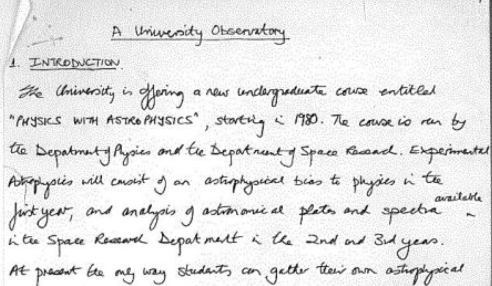

Pulsars from the ground in radio wavelengths
Well done, your research proposal was accepted!
The first pulsar was actually discovered using radio observations from the ground, so its certainly one way to view these objects. Taking observations from the ground is much cheaper, and allows us to build big arrays of telescopes, so that we can improve the quality of our data. We cant wait to see what you will discover!
You may have been inspired by recent advancements in a technique called pulsar timing, which uses radio observatories on the ground. Because pulsars rotate with stable periods, the pulses we see occur at very regular times. That means astronomers know when we expect signals from certain pulsars to arrive at our detectors. Researchers have been using these techniques to study a phenomena known as gravitational waves. You can imagine these as ripples in space-time. If a gravitational wave passes through, the space between us and the pulsar will expand and contract. This means the pulses will either arrive earlier or later than they were expected. An example project is the European Pulsar Timing Array (EPTA), which uses 5 radio telescopes scattered across Europe.